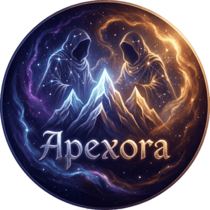

Ape
Entropía y OscuridadEs la fuerza que impulsa el caos y el declive. Sus susurros conducen a las estrellas a colapsar en agujeros negros y a las galaxias a dispersarse en el vacío. No es malvado, sino que representa el final inevitable de todo.

Teogonía
La mitología de Apexora surge de un evento cósmico primordial: el impacto de un cometa en los albores del tiempo. Este evento catastrófico no solo dio forma al mundo físico, sino que también engendró las fuerzas divinas que regirían el destino de todos los seres.
01
Pasá el cursor sobre cada hijo — o tocalo — para conocerlo. Hacé clic para ir a su ficha.
El padre primordial
Todo nace de una sola entidad imperfecta: Espacio. Espacio no tiene género y se creó al mismo tiempo que el universo. Luego de millones de años, y ante una creciente soledad, decidió desprender de sí a sus hijos, quienes lo ayudarían a gobernar el universo.
El surgimiento de distintos seres vivos requería demasiada atención y trabajo. Espacio puede ver todo, pero solo actuar en un lugar a la vez. De esta manera, sus hijos fueron concebidos con ese propósito.
Espacio es la entidad primordial, el tejido de la realidad misma. Nació junto al universo como un ser solitario, inmenso y sin forma definida. Al enfrentarse a la creciente complejidad del cosmos y la vida floreciente, decidió desprenderse de sí mismo.
Aunque puede observar cada rincón del universo, su capacidad de acción está limitada a un solo lugar a la vez. Esta restricción lo llevó a crear a sus hijos: cada uno representa una faceta de su propia esencia y una manifestación de su voluntad. Juntos, funcionan como sus manos y sus ojos.
Espacio encarna el principio, el medio y el fin. Es el vacío entre los átomos, el silencio entre las estrellas y la distancia entre los mundos. Sus hijos son extensiones de sí mismo: cada uno personifica una ley física o fuerza fundamental que otorga forma, orden y significado a su existencia solitaria.
02
Diez fuerzas nacidas de Espacio, agrupadas en pares que se equilibran entre sí — y dos que caminan solas, ajenas a bandos.
Los dioses no son solo conceptos religiosos: hay acontecimientos en los que los personajes interactúan con entidades o fenómenos ligados a ellos. Aun así, los protagonistas de las campañas solo han llegado a conocer a dos de estos diez.
Es la fuerza que impulsa el caos y el declive. Sus susurros conducen a las estrellas a colapsar en agujeros negros y a las galaxias a dispersarse en el vacío. No es malvado, sino que representa el final inevitable de todo.
Contrapunto de Ape, Xora es la arquitecta del cosmos. Teje las leyes de la física, guía los átomos para formar sistemas estelares estables y da forma a las primeras estrellas con su aliento de luz.
Su presencia no se limita a una nación: es uno de los elementos globales de Apexora. Se la vincula con la religión, la espiritualidad, la magia, los clérigos, la muerte y las ceremonias. Cómo se manifiesta físicamente sigue siendo un misterio abierto.
Siembra la materia prima y las ideas para que florezcan. Junto a su hermano Jilper, opera en un ciclo eterno que renueva el universo.
Elimina lo viejo y débil para hacer espacio a lo nuevo. Su danza perpetua junto a Millot es la que renueva el universo.
Encarna lo ilimitado y el potencial: el vasto espacio que se extiende eternamente.
Actúa como ancla de Cumacur, definiendo los límites de los sistemas solares, la masa de los planetas y la vida de las estrellas, dando forma y significado a la inmensidad.
Es el silencio absoluto entre las estrellas, el vacío primordial del que surgió todo.
Sus seguidores adoran la paz y el encontrarse a sí mismos de forma cordial. Un ganorista tiene a un astrónomo como sacerdote y a quienes practican en el observatorio como acólitos: al observar los vacíos del universo, sienten encontrar a su dios, y rezan pidiendo el Gan — la paz interior compartida con todos. Para ellos, Ganore es responsable de los ingredientes fundamentales de la vida, y ven a los demás dioses como asaltantes de su gran plan.
Cada mes "Ganore" del año, sus seguidores llenan las calles caminando en paz, en estado de Gan. Llevan consigo el Ganús, su libro sagrado, descrito como "la nada que da sentido al todo". Su figura central, el Maestro del Gan, se elige a mano alzada entre los seguidores cada vez que el anterior perece — y debe hallarse en Suminé, poseyendo grandes conocimientos de astronomía. Para un ganorista, la vida en el más allá es la nada misma, y eso resulta reconfortante: formar parte del cuerpo de Ganore.
Constituye la suma de lo que es, fue y será. Representa la conciencia cósmica, la conexión entre cada partícula de materia.
"¿Cómo se siente estar en todos lados a la vez?", le preguntaban sus hermanos. "Ni te lo puedes imaginar…", respondía. Ki, como lo llaman en el más allá, hace trabajos incomprendidos por el resto de los dioses y sabe todo lo que hacen los demás sin pedir permiso. Su cuerpo abraza el mismo tejido del espacio-tiempo — al menos, así era, hasta que decidió comprender la vida inteligente tomando distintas formas, lo cual lo fascinó.
Adora tomar forma humanoide para hurgar en vidas mundanas y causar divertidos estragos, por los que luego es reprendido por su padre y hermanos — sobre todo por su hermano gemelo Ganore, quien más le reprocha usar cuerpos humanos para sus travesuras. Sus habilidades van de la omnipresencia a la lectura de mentes, y el control de la materia, la información y la energía del universo — aunque no a la escala de su padre, Espacio. Su falta de moralidad y empatía lo ha metido, más de una vez, en aprietos.
El tejedor invisible que une el cosmos. Carece de forma, pero su presencia se manifiesta en cada órbita planetaria y en la cohesión de las galaxias. Su poder evita que todo se desmorone y se pierda en la nada.
El cronista universal. Asegura que la entropía de Ape se manifieste, que la creación de Millot siga una secuencia, y que los límites de Cabala tengan principio y final. Aunque imperceptible directamente, su flujo incesante define la realidad misma.
03
La destrucción de la antigua Apexora por un cometa desencadenó la furia latente entre los dioses Ape (entropía y oscuridad) y Xora (orden y luz). Esta enemistad existía antes del cataclismo: se decía que Ape había corrompido en secreto a la antigua civilización, sembrando el caos que provocó su caída. Xora, como protectora de ese mundo, albergaba un profundo resentimiento.
El conflicto persistió después del impacto, manifestándose en tormentas cósmicas y erupciones de energía. Sorprendentemente, la contienda se mantuvo equilibrada. Esta tensión constante entre el caos de Ape y el orden de Xora creó un balance dinámico que permitió a la humanidad superviviente encontrar espacio para reconstruirse.
La nueva civilización de Apexora se desarrolló contemplando esta eterna batalla divina. Los humanos interpretaron la oscuridad de Ape como un recordatorio de su vulnerabilidad, y el orden de Xora como la promesa de supervivencia. Con el tiempo, la humanidad llegó a venerar a ambas deidades: a Ape por establecer límites y a Xora por brindar esperanza e impulso para florecer nuevamente en su mundo devastado.